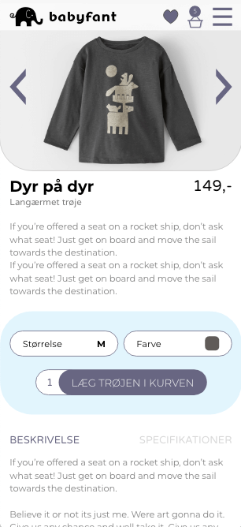
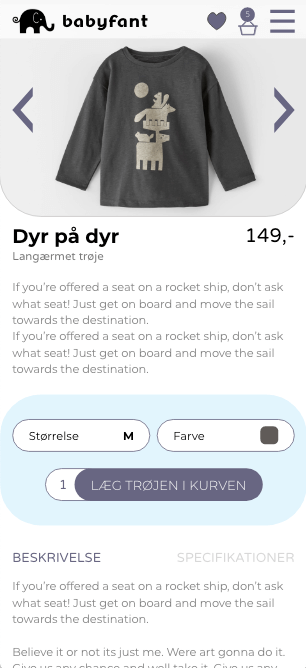

UX design af webshop
Design af webshop med user experience i centrum.
Design af webshop med user experience i centrum.


 


For at forstå markedet i dag samt forstå hvilken vej markedet bevæger sig, har jeg lavet en desk research af t-shirt markedet og har undersøgt, hvordan man sælger online. Med desk research forstås en undersøgelse af et marked for at udpege eksisterende normer og tiltag.

For at konkretisere idéen har jeg lavet en brainstorm. Resultatet af denne brainstorm er:
Jeg har brugt Adobe Xd til at designe webshoppen. Jeg har linket de forskellige sider sammen med Xd's prototype modul. Derved har jeg kunne teste mit design på målgruppen.
Jeg har brugt The Five Act interview til at få indsigt og forslag til forbedring af mit design. Interviewene med min målgruppe har givet mig følgende...
Disse udfordringer har jeg løst og indarbejdet i mit færdige design. Du kan se det endelige resutat her:
Se webshoppen
Vi har afholdt en præsentation af vores webshopdesign som afslutning på forløbet.